6. Income and Wealth Inequality#
6.1. Overview#
In the lecture Long-Run Growth we studied how GDP per capita has changed for certain countries and regions.
Per capita GDP is important because it gives us an idea of average income for households in a given country.
However, when we study income and wealth, averages are only part of the story.
Example 6.1
For example, imagine two societies, each with one million people, where
in the first society, the yearly income of one man is $100,000,000 and the income of the others are zero
in the second society, the yearly income of everyone is $100
These countries have the same income per capita (average income is $100) but the lives of the people will be very different (e.g., almost everyone in the first society is starving, even though one person is fabulously rich).
The example above suggests that we should go beyond simple averages when we study income and wealth.
This leads us to the topic of economic inequality, which examines how income and wealth (and other quantities) are distributed across a population.
In this lecture we study inequality, beginning with measures of inequality and then applying them to wealth and income data from the US and other countries.
6.1.1. Some history#
Many historians argue that inequality played a role in the fall of the Roman Republic (see, e.g., [Levitt, 2019]).
Following the defeat of Carthage and the invasion of Spain, money flowed into Rome from across the empire, greatly enriched those in power.
Meanwhile, ordinary citizens were taken from their farms to fight for long periods, diminishing their wealth.
The resulting growth in inequality was a driving factor behind political turmoil that shook the foundations of the republic.
Eventually, the Roman Republic gave way to a series of dictatorships, starting with Octavian (Augustus) in 27 BCE.
This history tells us that inequality matters, in the sense that it can drive major world events.
There are other reasons that inequality might matter, such as how it affects human welfare.
With this motivation, let us start to think about what inequality is and how we can quantify and analyze it.
6.1.2. Measurement#
In politics and popular media, the word “inequality” is often used quite loosely, without any firm definition.
To bring a scientific perspective to the topic of inequality we must start with careful definitions.
Hence we begin by discussing ways that inequality can be measured in economic research.
We will need to install the following packages
!pip install wbgapi plotly
We will also use the following imports.
import pandas as pd
import numpy as np
import matplotlib.pyplot as plt
import random as rd
import wbgapi as wb
import plotly.express as px
6.2. The Lorenz curve#
One popular measure of inequality is the Lorenz curve.
In this section we define the Lorenz curve and examine its properties.
6.2.1. Definition#
The Lorenz curve takes a sample \(w_1, \ldots, w_n\) and produces a curve \(L\).
We suppose that the sample has been sorted from smallest to largest.
To aid our interpretation, suppose that we are measuring wealth
\(w_1\) is the wealth of the poorest member of the population, and
\(w_n\) is the wealth of the richest member of the population.
The curve \(L\) is just a function \(y = L(x)\) that we can plot and interpret.
To create it we first generate data points \((x_i, y_i)\) according to
Definition 6.1
Now the Lorenz curve \(L\) is formed from these data points using interpolation.
If we use a line plot in matplotlib, the interpolation will be done for us.
The meaning of the statement \(y = L(x)\) is that the lowest \((100 \times x)\)% of people have \((100 \times y)\)% of all wealth.
if \(x=0.5\) and \(y=0.1\), then the bottom 50% of the population owns 10% of the wealth.
In the discussion above we focused on wealth but the same ideas apply to income, consumption, etc.
6.2.2. Lorenz curves of simulated data#
Let’s look at some examples and try to build understanding.
First let us construct a lorenz_curve function that we can
use in our simulations below.
It is useful to construct a function that translates an array of income or wealth data into the cumulative share of individuals (or households) and the cumulative share of income (or wealth).
def lorenz_curve(y):
"""
Calculates the Lorenz Curve, a graphical representation of
the distribution of income or wealth.
It returns the cumulative share of people (x-axis) and
the cumulative share of income earned.
Parameters
----------
y : array_like(float or int, ndim=1)
Array of income/wealth for each individual.
Unordered or ordered is fine.
Returns
-------
cum_people : array_like(float, ndim=1)
Cumulative share of people for each person index (i/n)
cum_income : array_like(float, ndim=1)
Cumulative share of income for each person index
References
----------
.. [1] https://en.wikipedia.org/wiki/Lorenz_curve
Examples
--------
>>> a_val, n = 3, 10_000
>>> y = np.random.pareto(a_val, size=n)
>>> f_vals, l_vals = lorenz(y)
"""
n = len(y)
y = np.sort(y)
s = np.zeros(n + 1)
s[1:] = np.cumsum(y)
cum_people = np.zeros(n + 1)
cum_income = np.zeros(n + 1)
for i in range(1, n + 1):
cum_people[i] = i / n
cum_income[i] = s[i] / s[n]
return cum_people, cum_income
In the next figure, we generate \(n=2000\) draws from a lognormal distribution and treat these draws as our population.
The straight 45-degree line (\(x=L(x)\) for all \(x\)) corresponds to perfect equality.
The log-normal draws produce a less equal distribution.
For example, if we imagine these draws as being observations of wealth across a sample of households, then the dashed lines show that the bottom 80% of households own just over 40% of total wealth.
n = 2000
sample = np.exp(np.random.randn(n))
fig, ax = plt.subplots()
f_vals, l_vals = lorenz_curve(sample)
ax.plot(f_vals, l_vals, label=f'lognormal sample', lw=2)
ax.plot(f_vals, f_vals, label='equality', lw=2)
ax.vlines([0.8], [0.0], [0.43], alpha=0.5, colors='k', ls='--')
ax.hlines([0.43], [0], [0.8], alpha=0.5, colors='k', ls='--')
ax.set_xlim((0, 1))
ax.set_xlabel("share of households")
ax.set_ylim((0, 1))
ax.set_ylabel("share of wealth")
ax.legend()
plt.show()
{kind=link}
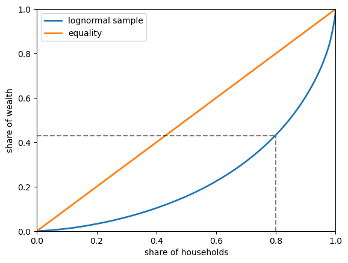
Fig. 6.1 Lorenz curve of simulated wealth data#
6.2.3. Lorenz curves for US data#
Next let’s look at US data for both income and wealth.
The following code block imports a subset of the dataset SCF_plus for 2016,
which is derived from the Survey of Consumer Finances (SCF).
url = 'https://github.com/QuantEcon/high_dim_data/raw/main/SCF_plus/SCF_plus_mini.csv'
df = pd.read_csv(url)
df_income_wealth = df.dropna()
df_income_wealth.head(n=5)
| year | n_wealth | t_income | l_income | weights | nw_groups | ti_groups | |
|---|---|---|---|---|---|---|---|
| 0 | 1950 | 266933.75 | 55483.027 | 0.0 | 0.998732 | 50-90% | 50-90% |
| 1 | 1950 | 87434.46 | 55483.027 | 0.0 | 0.998732 | 50-90% | 50-90% |
| 2 | 1950 | 795034.94 | 55483.027 | 0.0 | 0.998732 | Top 10% | 50-90% |
| 3 | 1950 | 94531.78 | 55483.027 | 0.0 | 0.998732 | 50-90% | 50-90% |
| 4 | 1950 | 166081.03 | 55483.027 | 0.0 | 0.998732 | 50-90% | 50-90% |
The next code block uses data stored in dataframe df_income_wealth to generate the Lorenz curves.
(The code is somewhat complex because we need to adjust the data according to population weights supplied by the SCF.)
Now we plot Lorenz curves for net wealth, total income and labor income in the US in 2016.
Total income is the sum of households’ all income sources, including labor income but excluding capital gains.
(All income measures are pre-tax.)
fig, ax = plt.subplots()
ax.plot(f_vals_nw[-1], l_vals_nw[-1], label=f'net wealth')
ax.plot(f_vals_ti[-1], l_vals_ti[-1], label=f'total income')
ax.plot(f_vals_li[-1], l_vals_li[-1], label=f'labor income')
ax.plot(f_vals_nw[-1], f_vals_nw[-1], label=f'equality')
ax.set_xlabel("share of households")
ax.set_ylabel("share of income/wealth")
ax.legend()
plt.show()
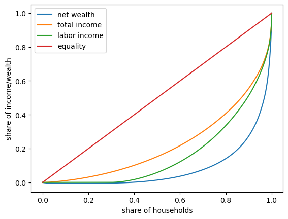
Fig. 6.2 2016 US Lorenz curves#
One key finding from this figure is that wealth inequality is more extreme than income inequality.
6.3. The Gini coefficient#
The Lorenz curve provides a visual representation of inequality in a distribution.
Another way to study income and wealth inequality is via the Gini coefficient.
In this section we discuss the Gini coefficient and its relationship to the Lorenz curve.
6.3.1. Definition#
As before, suppose that the sample \(w_1, \ldots, w_n\) has been sorted from smallest to largest.
The Gini coefficient is defined for the sample above as
Definition 6.2
The Gini coefficient is closely related to the Lorenz curve.
In fact, it can be shown that its value is twice the area between the line of equality and the Lorenz curve (e.g., the shaded area in Fig. 6.3).
The idea is that \(G=0\) indicates complete equality, while \(G=1\) indicates complete inequality.
fig, ax = plt.subplots()
f_vals, l_vals = lorenz_curve(sample)
ax.plot(f_vals, l_vals, label=f'lognormal sample', lw=2)
ax.plot(f_vals, f_vals, label='equality', lw=2)
ax.fill_between(f_vals, l_vals, f_vals, alpha=0.06)
ax.set_ylim((0, 1))
ax.set_xlim((0, 1))
ax.text(0.04, 0.5, r'$G = 2 \times$ shaded area')
ax.set_xlabel("share of households (%)")
ax.set_ylabel("share of wealth (%)")
ax.legend()
plt.show()
{kind=link}
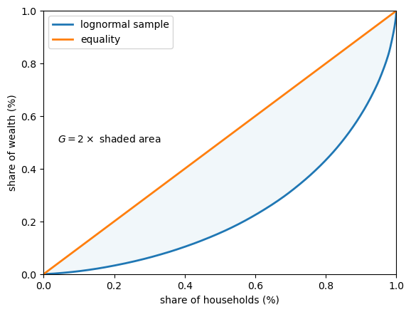
Fig. 6.3 Gini coefficient (simulated wealth data)#
In fact the Gini coefficient can also be expressed as
where \(A\) is the area between the 45-degree line of perfect equality and the Lorenz curve, while \(B\) is the area below the Lorenze curve – see Fig. 6.4.
fig, ax = plt.subplots()
f_vals, l_vals = lorenz_curve(sample)
ax.plot(f_vals, l_vals, label='lognormal sample', lw=2)
ax.plot(f_vals, f_vals, label='equality', lw=2)
ax.fill_between(f_vals, l_vals, f_vals, alpha=0.06)
ax.fill_between(f_vals, l_vals, np.zeros_like(f_vals), alpha=0.06)
ax.set_ylim((0, 1))
ax.set_xlim((0, 1))
ax.text(0.55, 0.4, 'A')
ax.text(0.75, 0.15, 'B')
ax.set_xlabel("share of households")
ax.set_ylabel("share of wealth")
ax.legend()
plt.show()
{kind=link}
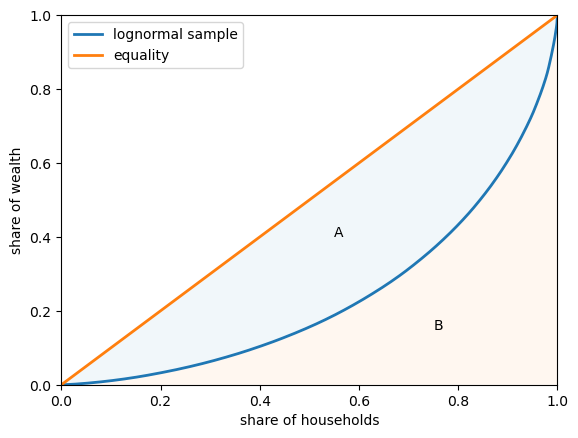
Fig. 6.4 Lorenz curve and Gini coefficient#
See also
The World in Data project has a graphical exploration of the Lorenz curve and the Gini coefficient
6.3.2. Gini coefficient of simulated data#
Let’s examine the Gini coefficient in some simulations.
The code below computes the Gini coefficient from a sample.
def gini_coefficient(y):
r"""
Implements the Gini inequality index
Parameters
----------
y : array_like(float)
Array of income/wealth for each individual.
Ordered or unordered is fine
Returns
-------
Gini index: float
The gini index describing the inequality of the array of income/wealth
References
----------
https://en.wikipedia.org/wiki/Gini_coefficient
"""
n = len(y)
i_sum = np.zeros(n)
for i in range(n):
for j in range(n):
i_sum[i] += abs(y[i] - y[j])
return np.sum(i_sum) / (2 * n * np.sum(y))
Now we can compute the Gini coefficients for five different populations.
Each of these populations is generated by drawing from a lognormal distribution with parameters \(\mu\) (mean) and \(\sigma\) (standard deviation).
To create the five populations, we vary \(\sigma\) over a grid of length \(5\) between \(0.2\) and \(4\).
In each case we set \(\mu = - \sigma^2 / 2\).
This implies that the mean of the distribution does not change with \(\sigma\).
You can check this by looking up the expression for the mean of a lognormal distribution.
%%time
k = 5
σ_vals = np.linspace(0.2, 4, k)
n = 2_000
ginis = []
for σ in σ_vals:
μ = -σ**2 / 2
y = np.exp(μ + σ * np.random.randn(n))
ginis.append(gini_coefficient(y))
CPU times: user 7.34 s, sys: 0 ns, total: 7.34 s
Wall time: 7.34 s
Let’s build a function that returns a figure (so that we can use it later in the lecture).
def plot_inequality_measures(x, y, legend, xlabel, ylabel, title=None):
fig, ax = plt.subplots()
ax.plot(x, y, marker='o', label=legend)
ax.set_xlabel(xlabel)
ax.set_ylabel(ylabel)
if title is not None:
ax.set_title(title)
ax.legend()
return fig, ax
fix, ax = plot_inequality_measures(σ_vals,
ginis,
'simulated',
r'$\sigma$',
'Gini coefficients')
plt.show()
{kind=link}
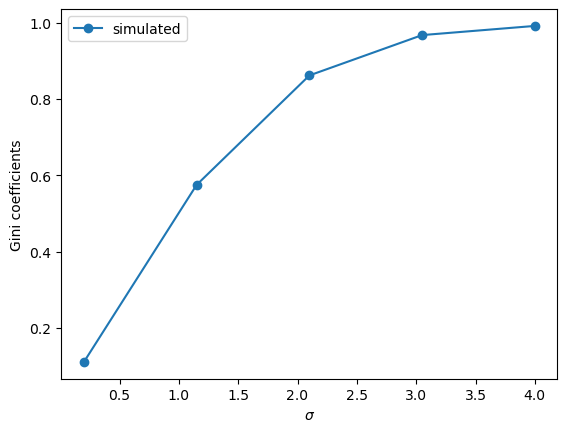
Fig. 6.5 Gini coefficients of simulated data#
The plots show that inequality rises with \(\sigma\), according to the Gini coefficient.
6.3.3. Gini coefficient for income (US data)#
Let’s look at the Gini coefficient for the distribution of income in the US.
We will get pre-computed Gini coefficients (based on income) from the World Bank using the wbgapi.
Let’s use the wbgapi package we imported earlier to search the World Bank data for Gini to find the Series ID.
wb.search("gini")
Series
| ID | Name | Field | Value |
|---|---|---|---|
| SI.POV.GINI | Developmentrelevance | ...tracks the number of economies with high inequality, defined as those with a Gini index greater than 0.4... | |
| SI.POV.GINI | IndicatorName | Gini index | |
| SI.POV.GINI | Limitationsandexceptions | ...Gini coefficients are not unique. It is possible for two different Lorenz curves to... | |
| SI.POV.GINI | Longdefinition | ...Gini index measures the extent to which the distribution of income (or, in some... | |
| SI.POV.GINI | Statisticalconceptandmethodology | ...Methodology: The Gini index measures the area between the Lorenz curve and a hypothetical line of... | |
| SI.POV.GINI.FS | IndicatorName | GINI index (World Bank estimate), first comparable values | |
| SI.POV.GINI.SG | IndicatorName | GINI index (World Bank estimate), second comparable values | |
| SI.POV.GINI.TH | IndicatorName | GINI index (World Bank estimate), third comparable values |
We now know the series ID is SI.POV.GINI.
(Another way to find the series ID is to use the World Bank data portal and then use wbgapi to fetch the data.)
To get a quick overview, let’s histogram Gini coefficients across all countries and all years in the World Bank dataset.
# Fetch gini data for all countries
gini_all = wb.data.DataFrame("SI.POV.GINI")
# remove 'YR' in index and convert to integer
gini_all.columns = gini_all.columns.map(lambda x: int(x.replace('YR','')))
# Create a long series with a multi-index of the data to get global min and max values
gini_all = gini_all.unstack(level='economy').dropna()
# Build a histogram
ax = gini_all.plot(kind="hist", bins=20)
ax.set_xlabel("Gini coefficient")
ax.set_ylabel("frequency")
plt.show()
{kind=link}
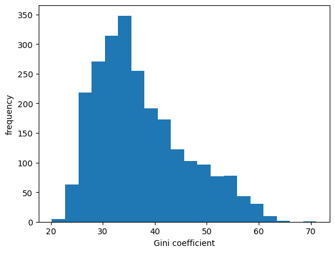
Fig. 6.6 Histogram of Gini coefficients across countries#
We can see in Fig. 6.6 that across 50 years of data and all countries the measure varies between 20 and 65.
Let us fetch the data DataFrame for the USA.
data = wb.data.DataFrame("SI.POV.GINI", "USA")
data.head(n=5)
# remove 'YR' in index and convert to integer
data.columns = data.columns.map(lambda x: int(x.replace('YR','')))
(This package often returns data with year information contained in the columns. This is not always convenient for simple plotting with pandas so it can be useful to transpose the results before plotting.)
data = data.T # Obtain years as rows
data_usa = data['USA'] # pd.Series of US data
Let us take a look at the data for the US.
fig, ax = plt.subplots()
ax = data_usa.plot(ax=ax)
ax.set_ylim(data_usa.min()-1, data_usa.max()+1)
ax.set_ylabel("Gini coefficient (income)")
ax.set_xlabel("year")
plt.show()
{kind=link}
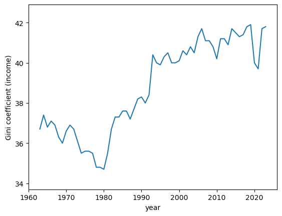
Fig. 6.7 Gini coefficients for income distribution (USA)#
As can be seen in Fig. 6.7, the income Gini trended upward from 1980 to 2020 and then dropped following at the start of the COVID pandemic.
6.3.4. Gini coefficient for wealth#
In the previous section we looked at the Gini coefficient for income, focusing on using US data.
Now let’s look at the Gini coefficient for the distribution of wealth.
We will use US data from the Survey of Consumer Finances
df_income_wealth.year.describe()
count 509455.000000
mean 1982.122062
std 22.607350
min 1950.000000
25% 1959.000000
50% 1983.000000
75% 2004.000000
max 2016.000000
Name: year, dtype: float64
This notebook can be used to compute this information over the full dataset.
data_url = 'https://github.com/QuantEcon/lecture-python-intro/raw/main/lectures/_static/lecture_specific/inequality/usa-gini-nwealth-tincome-lincome.csv'
ginis = pd.read_csv(data_url, index_col='year')
ginis.head(n=5)
| n_wealth | t_income | l_income | |
|---|---|---|---|
| year | |||
| 1950 | 0.825733 | 0.442487 | 0.534295 |
| 1953 | 0.805949 | 0.426454 | 0.515898 |
| 1956 | 0.812179 | 0.444269 | 0.534929 |
| 1959 | 0.795207 | 0.437493 | 0.521399 |
| 1962 | 0.808695 | 0.443584 | 0.534513 |
Let’s plot the Gini coefficients for net wealth.
fig, ax = plt.subplots()
ax.plot(years, ginis["n_wealth"], marker='o')
ax.set_xlabel("year")
ax.set_ylabel("Gini coefficient")
plt.show()
{kind=link}
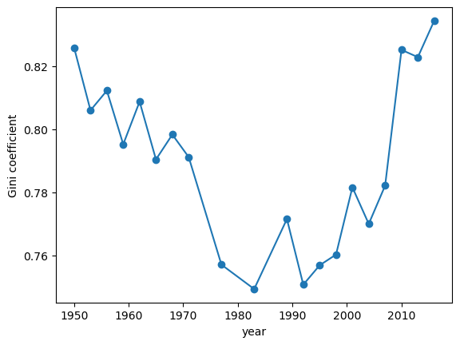
Fig. 6.8 Gini coefficients of US net wealth#
The time series for the wealth Gini exhibits a U-shape, falling until the early 1980s and then increasing rapidly.
One possibility is that this change is mainly driven by technology.
However, we will see below that not all advanced economies experienced similar growth of inequality.
6.3.5. Cross-country comparisons of income inequality#
Earlier in this lecture we used wbgapi to get Gini data across many countries
and saved it in a variable called gini_all
In this section we will use this data to compare several advanced economies, and to look at the evolution in their respective income Ginis.
data = gini_all.unstack()
data.columns
Index(['USA', 'GBR', 'FRA', 'CAN', 'SWE', 'IND', 'ITA', 'ISR', 'NOR', 'PAN',
...
'LBN', 'ZWE', 'NRU', 'ARE', 'MMR', 'BRB', 'QAT', 'GRD', 'MHL', 'GNQ'],
dtype='object', name='economy', length=171)
There are 167 countries represented in this dataset.
Let us compare three advanced economies: the US, the UK, and Norway
ax = data[['USA','GBR', 'NOR']].plot()
ax.set_xlabel('year')
ax.set_ylabel('Gini coefficient')
ax.legend(title="")
plt.show()
{kind=link}
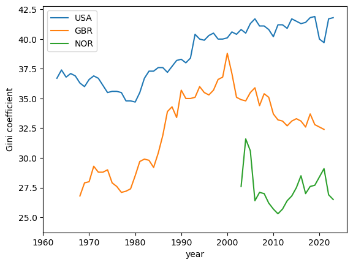
Fig. 6.9 Gini coefficients for income (USA, United Kingdom, and Norway)#
We see that Norway has a shorter time series.
Let us take a closer look at the underlying data and see if we can rectify this.
data[['NOR']].dropna().head(n=5)
| economy | NOR |
|---|---|
| 1979 | 26.9 |
| 1986 | 24.6 |
| 1991 | 25.2 |
| 1995 | 26.0 |
| 2000 | 27.4 |
The data for Norway in this dataset goes back to 1979 but there are gaps in the time series and matplotlib is not showing those data points.
We can use the .ffill() method to copy and bring forward the last known value in a series to fill in these gaps
data['NOR'] = data['NOR'].ffill()
ax = data[['USA','GBR', 'NOR']].plot()
ax.set_xlabel('year')
ax.set_ylabel('Gini coefficient')
ax.legend(title="")
plt.show()
{kind=link}
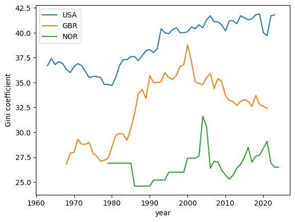
Fig. 6.10 Gini coefficients for income (USA, United Kingdom, and Norway)#
From this plot we can observe that the US has a higher Gini coefficient (i.e. higher income inequality) when compared to the UK and Norway.
Norway has the lowest Gini coefficient over the three economies and, moreover, the Gini coefficient shows no upward trend.
6.3.6. Gini Coefficient and GDP per capita (over time)#
We can also look at how the Gini coefficient compares with GDP per capita (over time).
Let’s take another look at the US, Norway, and the UK.
countries = ['USA', 'NOR', 'GBR']
gdppc = wb.data.DataFrame("NY.GDP.PCAP.KD", countries)
# remove 'YR' in index and convert to integer
gdppc.columns = gdppc.columns.map(lambda x: int(x.replace('YR','')))
gdppc = gdppc.T
We can rearrange the data so that we can plot GDP per capita and the Gini coefficient across years
plot_data = pd.DataFrame(data[countries].unstack())
plot_data.index.names = ['country', 'year']
plot_data.columns = ['gini']
Now we can get the GDP per capita data into a shape that can be merged with plot_data
pgdppc = pd.DataFrame(gdppc.unstack())
pgdppc.index.names = ['country', 'year']
pgdppc.columns = ['gdppc']
plot_data = plot_data.merge(pgdppc, left_index=True, right_index=True)
plot_data.reset_index(inplace=True)
Now we use Plotly to build a plot with GDP per capita on the y-axis and the Gini coefficient on the x-axis.
min_year = plot_data.year.min()
max_year = plot_data.year.max()
The time series for all three countries start and stop in different years.
We will add a year mask to the data to improve clarity in the chart including the different end years associated with each country’s time series.
labels = [1979, 1986, 1991, 1995, 2000, 2020, 2021, 2022] + \
list(range(min_year,max_year,5))
plot_data.year = plot_data.year.map(lambda x: x if x in labels else None)
fig = px.line(plot_data,
x = "gini",
y = "gdppc",
color = "country",
text = "year",
height = 800,
labels = {"gini" : "Gini coefficient", "gdppc" : "GDP per capita"}
)
fig.update_traces(textposition="bottom right")
fig.show()
This plot shows that all three Western economies’ GDP per capita has grown over time with some fluctuations in the Gini coefficient.
From the early 80’s the United Kingdom and the US economies both saw increases in income inequality.
Interestingly, since the year 2000, the United Kingdom saw a decline in income inequality while the US exhibits persistent but stable levels around a Gini coefficient of 40.
{kind=link}
6.5. Exercises#
Exercise 6.1
Using simulation, compute the top 10 percent shares for the collection of lognormal distributions associated with the random variables \(w_\sigma = \exp(\mu + \sigma Z)\), where \(Z \sim N(0, 1)\) and \(\sigma\) varies over a finite grid between \(0.2\) and \(4\).
As \(\sigma\) increases, so does the variance of \(w_\sigma\).
To focus on volatility, adjust \(\mu\) at each step to maintain the equality \(\mu=-\sigma^2/2\).
For each \(\sigma\), generate 2,000 independent draws of \(w_\sigma\) and calculate the Lorenz curve and Gini coefficient.
Confirm that higher variance generates more dispersion in the sample, and hence greater inequality.
Solution to Exercise 6.1
Here is one solution:
def calculate_top_share(s, p=0.1):
s = np.sort(s)
n = len(s)
index = int(n * (1 - p))
return s[index:].sum() / s.sum()
k = 5
σ_vals = np.linspace(0.2, 4, k)
n = 2_000
topshares = []
ginis = []
f_vals = []
l_vals = []
for σ in σ_vals:
μ = -σ ** 2 / 2
y = np.exp(μ + σ * np.random.randn(n))
f_val, l_val = lorenz_curve(y)
f_vals.append(f_val)
l_vals.append(l_val)
ginis.append(gini_coefficient(y))
topshares.append(calculate_top_share(y))
fig, ax = plot_inequality_measures(σ_vals,
topshares,
"simulated data",
"$\sigma$",
"top $10\%$ share",
"Top shares of simulated data")
plt.show()
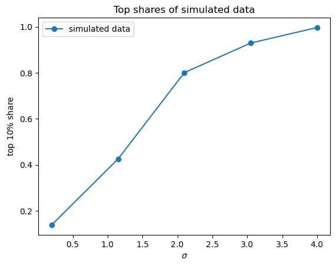
fig, ax = plot_inequality_measures(σ_vals,
ginis,
"simulated data",
"$\sigma$",
"gini coefficient",
"Gini coefficients of simulated data")
plt.show()
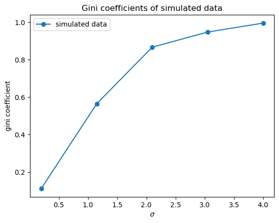
fig, ax = plt.subplots()
ax.plot([0,1],[0,1], label=f"equality")
for i in range(len(f_vals)):
ax.plot(f_vals[i], l_vals[i], label=f"$\sigma$ = {σ_vals[i]}")
ax.set_title("Lorenz curves for simulated data")
plt.legend()
plt.show()
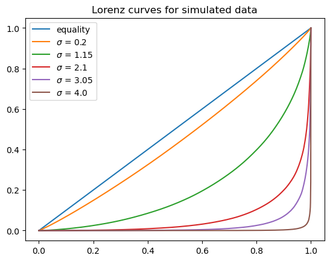
Exercise 6.2
According to the definition of the top shares (6.1) we can also calculate the top percentile shares using the Lorenz curve.
Compute the top shares of US net wealth using the corresponding Lorenz curves data: f_vals_nw, l_vals_nw and linear interpolation.
Plot the top shares generated from Lorenz curve and the top shares approximated from data together.
Solution to Exercise 6.2
Here is one solution:
def lorenz2top(f_val, l_val, p=0.1):
t = lambda x: np.interp(x, f_val, l_val)
return 1- t(1 - p)
top_shares_nw = []
for f_val, l_val in zip(f_vals_nw, l_vals_nw):
top_shares_nw.append(lorenz2top(f_val, l_val))
fig, ax = plt.subplots()
ax.plot(years, df_topshares["topshare_n_wealth"], marker='o',\
label="net wealth-approx")
ax.plot(years, top_shares_nw, marker='o', label="net wealth-lorenz")
ax.set_xlabel("year")
ax.set_ylabel("top $10\%$ share")
ax.set_title('US top shares: approximation vs Lorenz')
ax.legend()
plt.show()
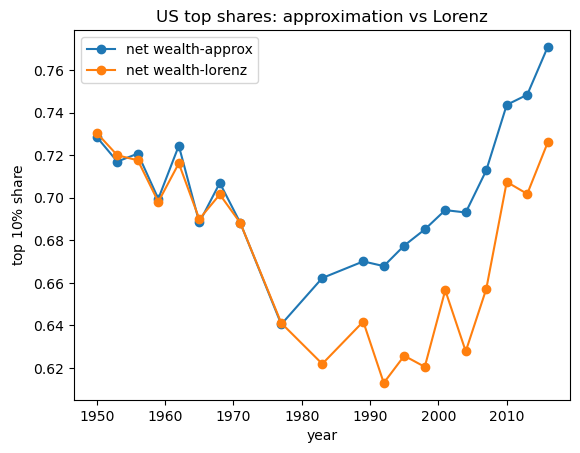
Exercise 6.3
The code to compute the Gini coefficient is listed in the lecture above.
This code uses loops to calculate the coefficient based on income or wealth data.
This function can be re-written using vectorization which will greatly improve the computational efficiency when using python.
Re-write the function gini_coefficient using numpy and vectorized code.
You can compare the output of this new function with the one above, and note the speed differences.
Solution to Exercise 6.3
Let’s take a look at some raw data for the US that is stored in df_income_wealth
df_income_wealth.describe()
| year | n_wealth | t_income | l_income | weights | |
|---|---|---|---|---|---|
| count | 509455.000000 | 5.094550e+05 | 5.094550e+05 | 5.094550e+05 | 509455.000000 |
| mean | 1982.122062 | 4.512145e+06 | 3.255242e+05 | 9.525005e+04 | 3.294007 |
| std | 22.607350 | 3.477071e+07 | 3.160138e+06 | 8.316296e+05 | 2.671516 |
| min | 1950.000000 | -2.340803e+08 | -8.001954e+07 | 0.000000e+00 | 0.000000 |
| 25% | 1959.000000 | 1.357817e+04 | 2.614322e+04 | 0.000000e+00 | 1.207430 |
| 50% | 1983.000000 | 8.484058e+04 | 4.812237e+04 | 3.247179e+04 | 2.380133 |
| 75% | 2004.000000 | 3.622574e+05 | 9.077778e+04 | 6.582137e+04 | 5.017505 |
| max | 2016.000000 | 2.928346e+09 | 3.056805e+08 | 1.115575e+08 | 31.052229 |
df_income_wealth.head(n=4)
| year | n_wealth | t_income | l_income | weights | nw_groups | ti_groups | |
|---|---|---|---|---|---|---|---|
| 0 | 1950 | 266933.75 | 55483.027 | 0.0 | 0.998732 | 50-90% | 50-90% |
| 1 | 1950 | 87434.46 | 55483.027 | 0.0 | 0.998732 | 50-90% | 50-90% |
| 2 | 1950 | 795034.94 | 55483.027 | 0.0 | 0.998732 | Top 10% | 50-90% |
| 3 | 1950 | 94531.78 | 55483.027 | 0.0 | 0.998732 | 50-90% | 50-90% |
We will focus on wealth variable n_wealth to compute a Gini coefficient for the year 2016.
data = df_income_wealth[df_income_wealth.year == 2016].sample(3000, random_state=1)
data.head(n=2)
| year | n_wealth | t_income | l_income | weights | nw_groups | ti_groups | |
|---|---|---|---|---|---|---|---|
| 479748 | 2016 | 0.0 | 9214.991 | 0.0 | 4.546196 | 0-50% | 0-50% |
| 495754 | 2016 | 6007000.0 | 36454.914 | 0.0 | 2.925190 | Top 10% | 0-50% |
We can first compute the Gini coefficient using the function defined in the lecture above.
gini_coefficient(data.n_wealth.values)
np.float64(0.9300769449032591)
Now we can write a vectorized version using numpy
def gini(y):
n = len(y)
y_1 = np.reshape(y, (n, 1))
y_2 = np.reshape(y, (1, n))
g_sum = np.sum(np.abs(y_1 - y_2))
return g_sum / (2 * n * np.sum(y))
gini(data.n_wealth.values)
np.float64(0.9300769449032592)
Let’s simulate five populations by drawing from a lognormal distribution as before
k = 5
σ_vals = np.linspace(0.2, 4, k)
n = 2_000
σ_vals = σ_vals.reshape((k,1))
μ_vals = -σ_vals**2/2
y_vals = np.exp(μ_vals + σ_vals*np.random.randn(n))
We can compute the Gini coefficient for these five populations using the vectorized function, the computation time is shown below:
%%time
gini_coefficients =[]
for i in range(k):
gini_coefficients.append(gini(y_vals[i]))
CPU times: user 35.9 ms, sys: 3 ms, total: 38.9 ms
Wall time: 38.7 ms
This shows the vectorized function is much faster. This gives us the Gini coefficients for these five households.
gini_coefficients
[np.float64(0.11316321818793416),
np.float64(0.5792897006349511),
np.float64(0.8504981575541397),
np.float64(0.9540773436328166),
np.float64(0.9839190441063463)]